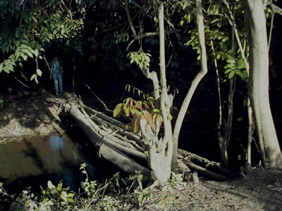

Susan in Guinea
First glimpse of Susan at Gbessia
International Airport.
A really cool baobab tree that
we spent a lot of time looking at.
Susan and Puppy eventually made
friends, although she's a cat person and Puppy frankly doesn't
care much for white people.

Susan ponders whether or not
to trust a local log bridge.
Taking a GPS reading at Pete
Nalle, at the edge of the Tamgue plateau.
Students learn how the GPS unit
works while marking the Dongol Tinsira nature trail.